1Sitios de interés
Centro Histórico y Parque Santander
Sincelejo
Sector urbano de arquitectura republicana y vernácula donde se ubica la Catedral de San Francisco de Asís.
Guía turística de Sucre, Colombia
Mar, montañas, sabanas, caños y ríos. Gira el mapa, elige un destino y descubre experiencias en 5 subregiones y la ciudad capital.
Elige un destino
Arrastra para girar el mapa. Toca una subregión para acercarte.
Sucre reúne en un solo destino experiencias distintas en sus cinco subregiones: Golfo de Morrosquillo, Montes de María, Sabanas, San Jorge y La Mojana. Cada una guarda lugares y vivencias propias que le permiten al viajero descubrir la diversidad que define a la tierra sucreña.
Aquí el recorrido también se saborea y se baila. La experiencia gastronómica se disfruta desde las preparaciones típicas de manos de cocineros tradicionales a la orilla del mar, hasta el tradicional mote de queso de las Sabanas y las crujientes bolitas de queso conocidas como diabolines de Betulia; mientras que el calendario se llena de fiestas, carnaval y festivales donde suenan las bandas de viento, las gaitas y el pito atravesa’o.
Entre pueblos de arquitectura republicana, rutas de turismo comunitario con el pueblo zenú y recorridos por los escenarios que inspiraron la literatura de García Márquez, el visitante encuentra historia viva y una hospitalidad que lo hace sentir en casa.
Mar, montañas, sabanas, caños y ríos: cinco subregiones que ofrecen experiencias únicas y vibrantes que quedan en la memoria de quienes visitan al Sucre sin igual.
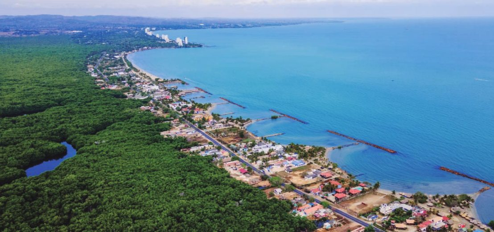
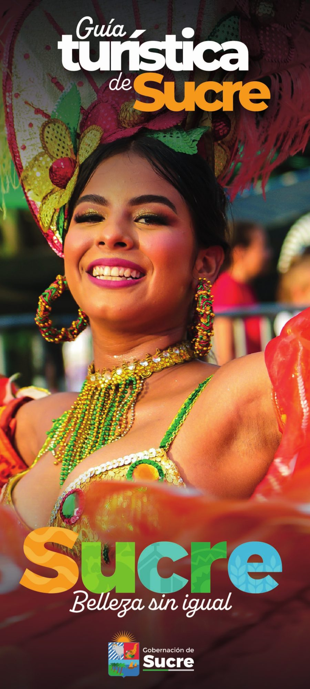
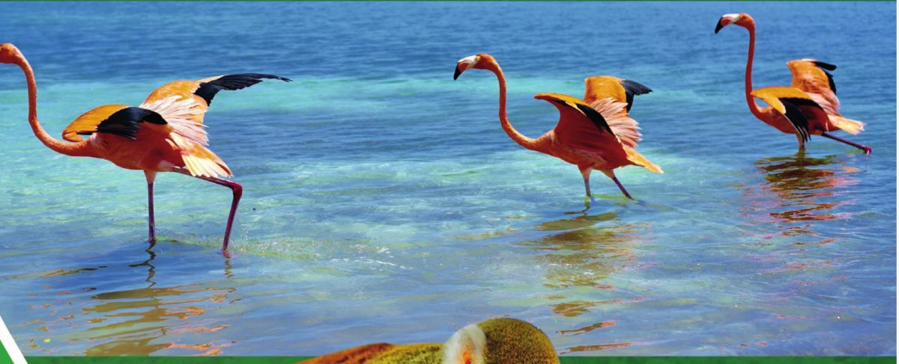
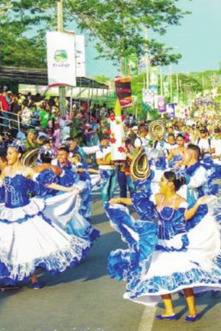
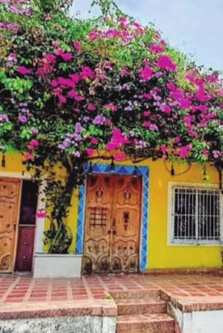
La capital de Sucre: centro histórico de arquitectura republicana, museos, miradores, ecoparques y las Fiestas del 20 de Enero.
1Sitios de interés
Sincelejo
Sector urbano de arquitectura republicana y vernácula donde se ubica la Catedral de San Francisco de Asís.
2Sitios de interés
Sincelejo
Epicentro folclórico con monumentos a referentes de la música sabanera como Lisandro Meza, Calixto Ochoa, Rubén Darío Salcedo e Hipólita Bertel (Pola Becté).
3Sitios de interés
Sincelejo
Instalaciones del Museo Arqueológico Zenú Manuel Huertas Vergara para el estudio de piezas prehispánicas.
4Sitios de interés
Sincelejo
Puntos elevados para contemplación de atardeceres y observación nocturna.
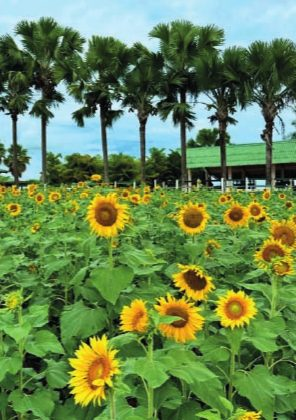
5Medio ambiente
Sincelejo – Las Majaguas
Espacio enfocado en la recreación al aire libre y caminatas ecológicas.
6Medio ambiente
Sincelejo
Actividad de observación astronómica con telescopios en zonas de baja contaminación lumínica.
7Cultura
Sincelejo
Celebración tradicional que se realiza desde principios del mes de enero con desfiles de carrozas, comparsas y bailes de fandango al ritmo de bandas de viento.
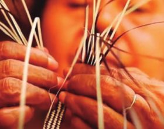
8Cultura
Sincelejo – San Martín
Recorrido de turismo comunitario liderado por el pueblo zenú.
Playas con certificación Bandera Azul, manglares, ciénagas y una cultura marinera que se vive en regatas, procesiones y festivales de cine frente al mar.
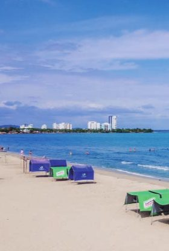
1Sitios de interés
Tolú y Coveñas
Sucre tiene tres de las ocho playas con certificación internacional que hay en Colombia. Se caracterizan por la calidad ambiental y sostenibilidad. Se encuentran en: Palo Blanco, en Tolú; El Edén y la Segunda Ensenada, en Coveñas.
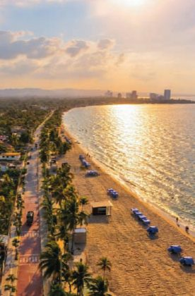
2Sitios de interés
San Onofre
Zona costera continental de arenas blancas, aguas cristalinas y naturaleza virgen, ubicada frente al archipiélago de San Bernardo.
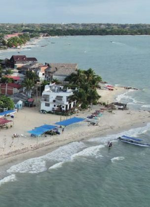
3Sitios de interés
Tolú y Coveñas
Son corredores costeros diseñados para caminatas frente al mar y disfrute de la brisa caribeña.
4Sitios de interés
Coveñas
Espacio expositivo centrado en la historia militar y marítima de la Armada Nacional.
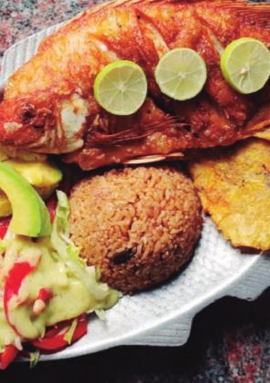
5Gastronomía
Tolú, Coveñas y Rincón del Mar
Preparaciones tradicionales a base de frutos del mar como arroz de coco con pescado frito, patacones, cazuela de mariscos, ceviche de camarón y cangrejo.
6Gastronomía
Golfo de Morrosquillo
Repostería y pasabocas artesanales elaborados con fruta de coco.
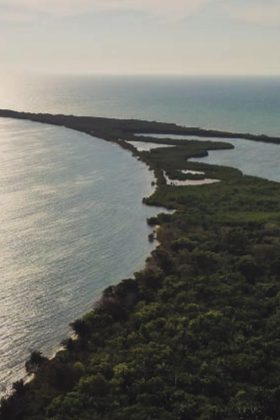
7Medio ambiente
Coveñas
Extenso ecosistema de humedal y canales de manglar para recorridos ecoturísticos.
8Medio ambiente
San Onofre
Área privada protegida orientada a la conservación marino-costera y el turismo de naturaleza.
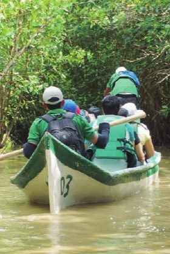
9Medio ambiente
Tolú
Área protegida de 1.133 hectáreas compuesta por manglares, canales, islas internas y lagunas en el sector de El Francés, idónea para avistamiento de aves.
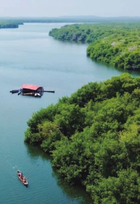
10Medio ambiente
Golfo de Morrosquillo
Humedal costero para paseos en canoa y avistamiento de aves y fauna silvestre.
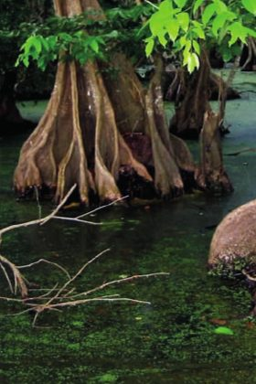
11Medio ambiente
San Onofre
Área natural protegida caracterizada por sus bosques de corcho.
12Medio ambiente
Coveñas y Rincón del Mar
Tour nocturno para nadar en aguas con plancton bioluminiscente que emite luz al contacto.
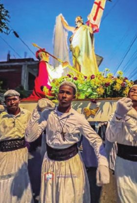
13Cultura
Santiago de Tolú
Celebración religiosa de más de 470 años en la que la Hermandad de los Nazarenos encabeza procesiones únicas con el paso ritual de un avance y dos retrocesos.
14Cultura
El Francés, Tolú
Es un evento náutico que se realiza en el mes de enero. Con más de seis décadas de historia, más de 100 pescadores compiten impulsados por los vientos a bordo de sus regatas artesanales con velas multicolores. La competencia celebra la memoria, cultura e identidad marítima, fortaleciendo el legado ancestral de la comunidad.
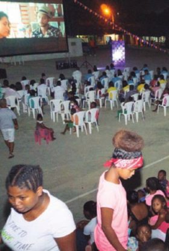
15Cultura
Santiago de Tolú
Festival con proyecciones cinematográficas gratuitas e itinerantes en Tolú, Coveñas, San Onofre, Berrugas y Rincón del Mar. Se realiza a finales de noviembre y principios de diciembre.
16Cultura
Santiago de Tolú
Recorridos por el centro urbano en bicitaxi explorando la memoria histórica local.
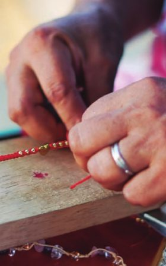
17Cultura
Golfo de Morrosquillo
Souvenirs y elementos trabajados en conchas de mar, coco, totumo, madera y palma de iraca.
18Cultura
Golfo de Morrosquillo
Presentaciones de bandas de viento, cumbia, porro y vallenato, junto a la práctica de paddle, buceo, jet ski y pesca artesanal.
La subregión montañosa: pueblos de bosque y memoria, pozas de agua cristalina en la Serranía de Coraza y la tradición gaitera de Ovejas.
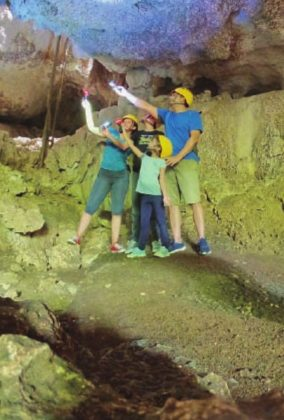
1Sitios de interés
Colosó, Ovejas, Chalán y Toluviejo
Municipios de la subregión montañosa que articulan memoria histórica, patrimonio campesino y senderos ecológicos.
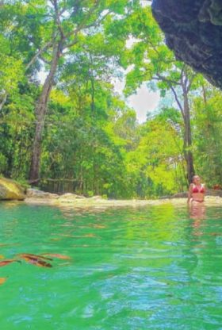
2Medio ambiente
Colosó
Balnearios naturales de aguas cristalinas en la Serranía de Coraza, entre las que destacan la poza Arizal y la poza Pajarito.
3Medio ambiente
Colosó
Caídas de agua naturales como el salto El Sereno y la cascada de Angostura.
4Medio ambiente
Colosó
Reserva natural apta para el senderismo ecológico y el contacto con la biodiversidad.
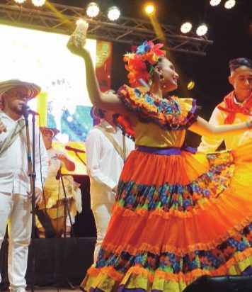
5Cultura
Ovejas
Es considerado Patrimonio Cultural e Inmaterial de la Nación y reúne concursos de gaita larga, gaita corta, canciones inéditas y parejas bailadoras. Se desarrolla en el mes de octubre y tiene alcance nacional. Está dedicado a las tradiciones musicales gaiteras.
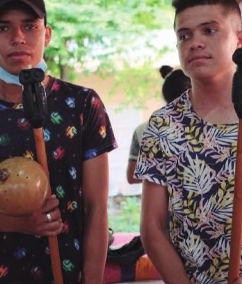
6Cultura
Ovejas
En este municipio hay talleres tradicionales de arte, oficio y técnica de fabricar, ajustar, restaurar y reparar instrumentos musicales de cuerda e interpretación de gaitas y tambores, ofrecidos por maestros artesanos y agrupaciones locales como el Taller de Gaitas y Tambores Ortiz y Los Gaiteros de Ovejas.
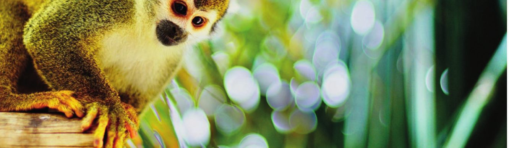
Plazas republicanas, el mote de queso, la Ruta del Color de Betulia, los cuadros vivos de Galeras y las rutas ancestrales del pueblo zenú.
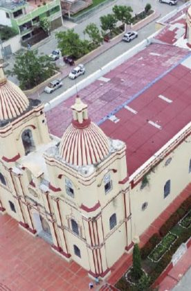
1Sitios de interés
Corozal
Muestra de casonas republicanas y neoclásicas junto a la Iglesia San José.
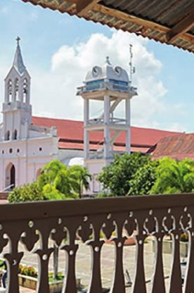
2Sitios de interés
Sincé
Plazas icónicas que albergan el obelisco histórico del municipio y el busto en homenaje al maestro Juan Madera.
3Sitios de interés
Sincé
Espacios históricos sobre los orígenes del municipio, la historia de los abuelos de Gabriel García Márquez y la representación de la Matanza del Tigre.
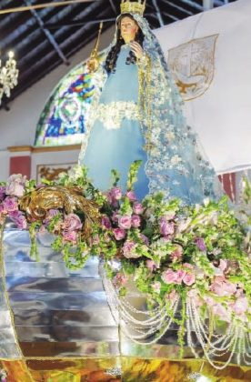
4Sitios de interés
Sincé
Único santuario mariano reconocido en el departamento de Sucre.
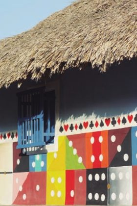
5Sitios de interés
Betulia
El recorrido sigue en el municipio de Betulia, ampliamente reconocido por la Ruta del Color, donde el arte comunitario se impone en cada trazo plasmado en las fachadas de las casas de bahareque. Estas lucen diseños únicos e irrepetibles, inspirados en raíces étnicas como las culturas africana, wayuu y zenú, convirtiéndose en hermosos lienzos coloridos.
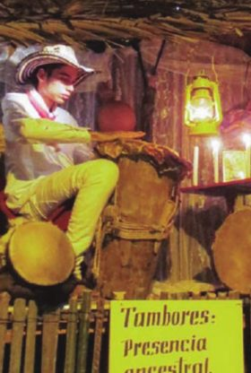
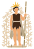
6Sitios de interés
Galeras
Son montajes escénicos a cielo abierto donde las personas actúan escenificando temáticas que incluyen pasajes religiosos, crítica política, literatura (como obras de Gabriel García Márquez), mitos, leyendas y la vida cotidiana de la región Caribe. Los habitantes de Galeras permanecen completamente inmóviles durante horas para dar la impresión de ser cuadros o pinturas humanas. Declarados Patrimonio Cultural Inmaterial de la Humanidad por la Unesco, los cuadros vivos convierten a Galeras en un gran escenario de arte y cultura durante la segunda semana del mes de enero.
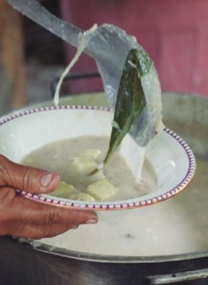
7Gastronomía
Sabanas · Corozal
En todos los municipios de la Sabana sucreña se destaca la preparación del mote de queso, sopa a base de ñame y queso costeño muy apetecida por nativos y visitantes. Además, se encuentra una variada propuesta de herencia libanesa de Casa Arsanios, en el municipio de Corozal.
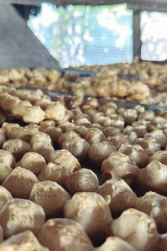
8Gastronomía
Betulia
Son deliciosas bolitas a base de almidón de yuca y queso que se doran en hornos de barro.
9Gastronomía
Sincelejo, Corozal y Galeras
Red de 14 experiencias, entre ellas: Pescachicho, en Sincelejo; Faena Sabanera y Finca La Rosita, en Corozal; Donde Mingo y Vivo con Gusto, en el municipio de Galeras.
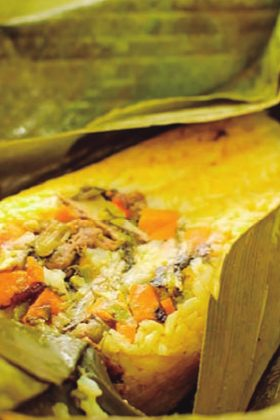
10Gastronomía
Los Palmitos, Morroa, Sampués y Sincé
Pava de Ají y Pasteles de la Sabana en Los Palmitos, Conñeque en Morroa, De la Tierra al Fogón en Sampués, y la cocina ancestral de Mercedes de la Ossa en Sincé.
11Medio ambiente
Corozal – Las Llanadas
Parque de turismo ambiental para senderismo, avistamiento de aves, agroturismo, apicultura, pesca y camping.
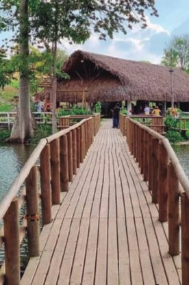
12Medio ambiente
Sampués – Huertas Chicas
Espacio natural de valor comunitario.
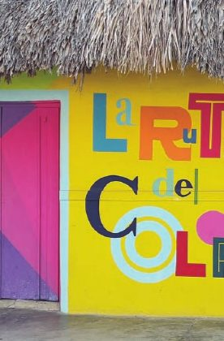
13Cultura
Betulia
En este municipio se aprecia una galería comunitaria en las fachadas de las viviendas de bahareque con diseños artísticos inspirados en las etnias zenú, wayuu y africana.
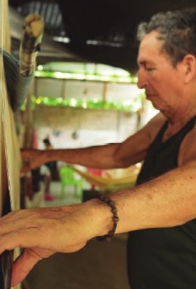
14Cultura
Morroa
En este municipio se aprecia la elaboración tradicional de hamacas, bolsos y otras artesanías de exportación.
15Cultura
Morroa
Este evento se caracteriza por la ejecución de la flauta de millo o pito atravesa’o. La festividad, que se desarrolla en junio, honra la memoria del maestro pitero Pablo Domínguez y resalta el trabajo de cultores, músicos y artesanos de la región. Hay concursos de piteros, competencias de parejas bailadoras de cumbia, muestras de canciones inéditas, desfiles folclóricos y ferias artesanales.
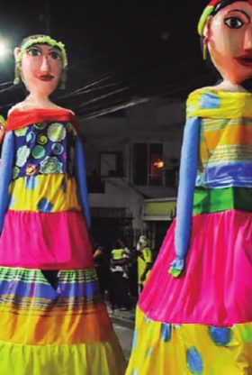
16Cultura
Corozal
Celebración carnavalesca festiva y tradicional que exalta la herencia cultural caribeña, la cumbia, los tambores y la alegría de la gente. Se desarrolla tradicionalmente en el mes de febrero.
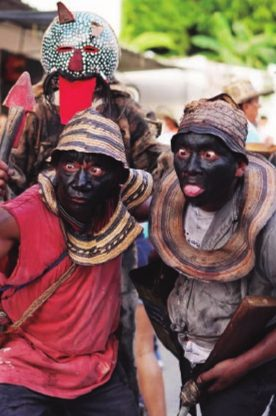
17Cultura
Sincé
Expresión teatral y popular de arraigo cultural que recrea de forma jocosa, y con más de 100 años de historia, la captura de un felino que azotaba a la población en el pasado. Se aprecia en el mes de noviembre, en el marco de la celebración de la Sinceanidad.
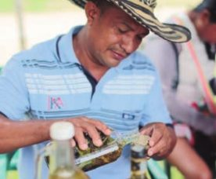
18Cultura
Sampués – Huertas Chicas
Experiencia etnoturística de la comunidad zenú.
19Cultura
San Antonio de Palmito
Vivencia en torno a las costumbres y la gastronomía indígena.
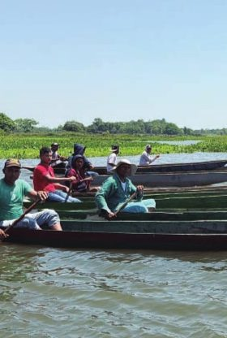
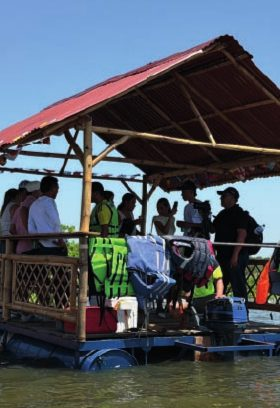
La fe del Señor de los Milagros en San Benito Abad y la identidad riana sabanera de Caimito, a orillas del río San Jorge.
1Sitios de interés
San Benito Abad
Templo de 1934 declarado patrimonio cultural y religioso de la nación. Es uno de los centros de peregrinación religiosa más importantes de la región Caribe y de toda Colombia, y se ubica frente a la plaza principal del municipio.
2Cultura y fe
San Benito Abad
Peregrinaciones masivas de todo el país cada 14 de septiembre y durante los meses de marzo y abril, por la devoción ante el Señor de los Milagros.
3Cultura y fe
Caimito
Mantiene viva la identidad cultural de Caimito. Esta festividad exalta las manifestaciones culturales del San Jorge sucreño y preserva la identidad del hombre riano sabanero mediante música, tradición oral, pesca artesanal, canotaje y la emblemática trashumancia. Fue fundado en 1989 por Ulises Silgado Ricardo y se desarrolla en el mes de junio.
Ríos, caños y ciénagas de la Depresión Momposina y los escenarios que inspiraron a García Márquez.
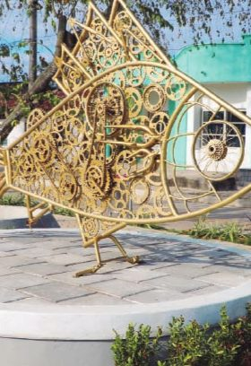
1Sitios de interés
Sucre (municipio)
Circuito compuesto por decenas de puntos ligados a la juventud de Gabriel García Márquez y sus obras, como la casa de Santiago Nasar, la casa de la Mamá Grande, la casa de Cayetano Gentile, la casa de Flora Miguel, el billar Sucre, el cementerio, el callejón de La Anunciada y la Casa de Castillo.
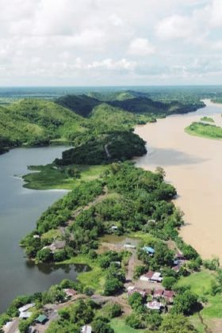
2Medio ambiente
Sucre, Majagual y Guaranda
Sistema ecosistémico integrado por ríos, caños, ciénagas y zapales en la Depresión Momposina que regula los ríos Cauca y San Jorge, apto para navegación en canoa y observación de aves, flora y fauna.
3Cultura
La Mojana
Narrativa popular que ha servido de base para las obras literarias del nobel Gabriel García Márquez, destacándose Los funerales de la Mamá Grande, La mala hora y El coronel no tiene quien le escriba.